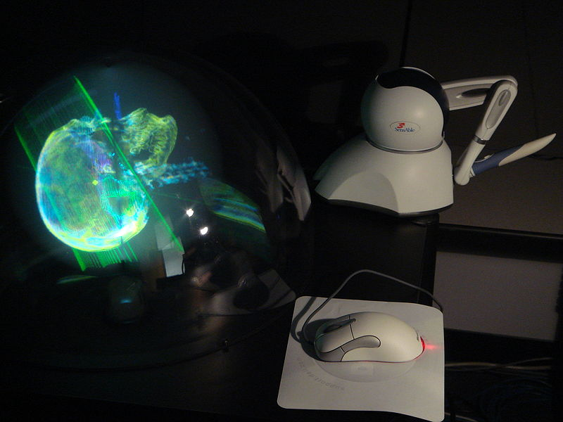

1.7.8. Голографические системы
Голография — набор технологий для точной записи, воспроизведения и переформирования волновых полей. Данный метод был предложен в 1947 году Дэннисом Габором, он же ввёл термин голограмма и получил «за изобретение и развитие голографического принципа» Нобелевскую премию по физике в 1971 году.
Голографической называют систему, в которой представление определённой оптической информации обеспечено интерференцией двух волн: отражённой от объекта и когерентной с ней волны. Источником когерентного излучения служит специальный лазер. Волну, которая отражена от объекта, называют объектной или предметной, а когерентную волну называют опорной. При наложении объектной и опорной волн на определённых участках происходит пространственное сложение их амплитуд с учётом фаз. В этих участках пространства интенсивности амплитуд, которые имеют световые волны, могут лежать в диапазоне от их взаимной разности до их взаимной суммы. Все участки пространства, на которых появляются интерференции, образуют интерференционную картину. Если в месте образования интерференционной картины поместить плоскуюфотопластинку, то изображение, возникающее на этой пластинке, называют голограммой.
Голограммы позволяют полностью воссоздать изображение исходного объекта, так как содержат информацию и об амплитудах, и о фазах волн; в том числе они могут дать изображение обратной стороны наблюдаемого объекта.